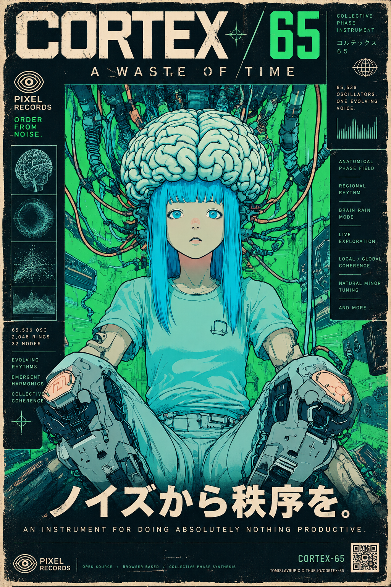

CORTEX / 65
A WASTE OF TIME
COLLECTIVE PHASE INSTRUMENT · 0.3.0 · SIGNED + NOTARIZED
65,536 evolving phase states. Sixteen playable brain regions. A bounded voice bank for drifting notes, Brain Rain, broad Brainstorm pulses and floating headphone orbits.
DOWNLOAD SIGNED MAC AU + APP ↓Apple Silicon · macOS 12 or later · Audio Unit instrument and standalone app. Intel Mac and VST3 builds are not included.
An instrument for doing absolutely nothing productive.
PLAY IN YOUR BROWSER ↗Install on Mac
- Unzip the download. The standalone app is inside
Native. - Run
Install-AU.commandto copy the AU into your user Audio Units folder. The installer backs up an existing CORTEX 65 component. - Rescan Audio Units in your DAW, then load CORTEX 65 on an instrument track. MIDI notes seed regional excitation.
The app and Audio Unit are Developer ID signed and Apple notarized, with validated tickets attached to both bundles. The final extracted archive passed signature and ticket verification; the app passed Gatekeeper, and the signed AU passed factory, instantiation and stereo MIDI render tests. Notarization + archive checksum receipt ↗.
Browser instrument
Tap the cortex to start audio and excite that spot, or press Start Field and turn on Pulses. Use headphones for Head Orbit or binaural beat pairs. Head Orbit supplies moving ear timing and head-shadow cues; its effect varies with the listener and headphones.
Safari and iPhone compatibility has been reviewed in source. Playback on physical Safari/iPhone devices has not been verified for this release. Start audio with a tap; after a call, screen lock or browser interruption, another tap may be needed. Begin with 4 voices on slower devices.
Keep your patches
Open Advanced, name the patch and use Save Preset. Load Preset restores musical settings without resetting the evolving phase state or transport. Save important patches as files before reloading or closing the page.
Poster + sharing artwork


Source and credits
Source is available under GNU AGPLv3, including the native build and browser engine. The release includes a complete source archive with the pinned JUCE dependency.
BodyParts3D, © The Database Center for Life Science licensed under CC Attribution 4.0 International. Anatomy attribution · Model notes. The instrument uses anatomical geometry and musical phase dynamics.